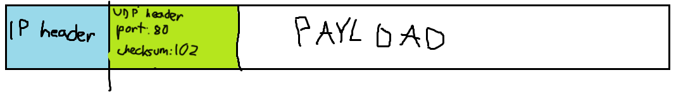
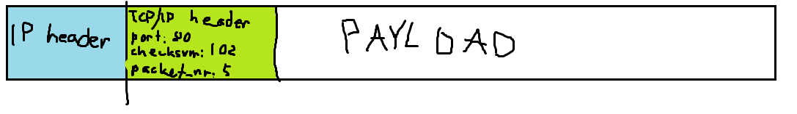

When a message is sent through IP, the IP address of the device it is being sent to is in the IP header. But what if the user on the device is using two applications at a time, for example Skype and Call of Duty? For this purpose, the UDP protocol was invented.
UDP sits on top of IP. UDP has its own header that is part of the IP body and contains data such as a port number and checksum. Port numbers are numbers that specify which application the packet should go to. When an application like Skype connects to the internet, it requests the operating system for a port number. When the operating system receives a packet, it forwards the packet to the application that has the same port number as the packet.
UDP also contains a checksum in its header. This is a 16-bit number that is the sum of all of the data in the payload. If the sum is bigger than the biggest number that can fit in 16 bits, the number overflows and only the last 16 digits are kept.
When someone receives a packet and the checksum doesn’t match the sum of the data, the packet is typically discarded. Note that there is no mechanism for requesting more packets if corrupted packets arrive. This is fine for applications like Skype (that’s why parts of the screen occasionally freeze), but for other applications like sending emails, making sure every packet arrives is absolutely necessary. For this reason, TCP/IP was invented.
TCP/IP is yet another protocol that works on top of IP. TCP/IP contains a port number and checksum, but also a lot of fancier features.
TCP/IP packets are given numbers which represent the order in which they should be arranged once they arrive in their destination. This means that for example when sending an email to someone, you can be sure that the different parts of the email arrive in the correct order.
TCP/IP also requires that once a packet arrives to a destination, an acknowledgement packet (or ACK for short) is sent back to the sender. If enough time passes before the sender receives an ACK, the sender resends the original packet. This ensures all of the packets arrive.